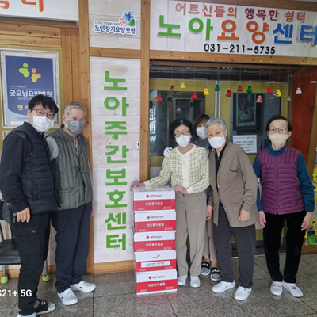
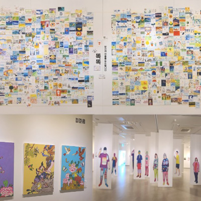
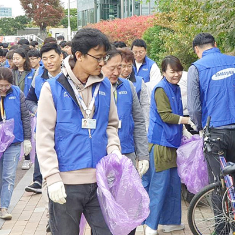
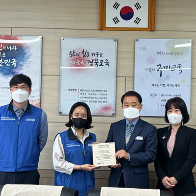
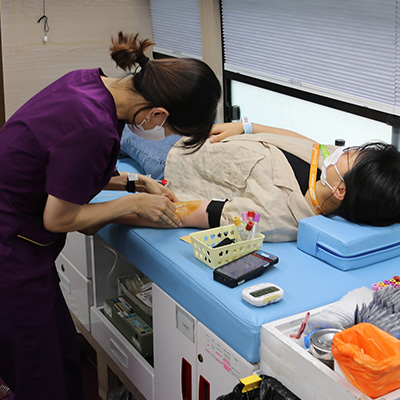

home > 사회공헌 > 주요활동
주요활동
Main Activity
삼성SDI의 사회공헌 소식들을 만나보세요
주요활동내용
-

- 희망나눔
- 2008년부터 지속적으로 해 온 희망나눔 캠페인은 소외 이웃들에게 명절때마다 부식품 세트를 전달하는 봉사활동입니다. 설맞이 또는 추석맞이 나눔을 전달하고 있으며 올해도 코로나19 상황으로 대한적십자사에서 비대면으로 물품을 배송하였습니다.
-

- 그리다방네모 전시회
- '그리다방'은 그리다와 다방의 합성어로 발달장애인이 '네모' 캔버스에 그림을 그리며 다양한 사람들과 소통하는 공간이란 의미입니다. 전시회는 매년 천안 삼거리 갤러리에서 열리며 발달장애인 작가들을 위한 후원을 계속하고 있습니다.
-

- 봉사활동
- 코로나19 방역 수칙을 준수하며 환경정화 봉사활동을 매년 진행합니다. 앞으로도 깨끗한 환경을 위해 환경 정화 활동을 지속적으로 실시하여 지역사회와 함께하는 삼성SDI가 되도록 노력하겠습니다.
-

- 드림워킹 숲 조성
- 드림워킹은 임직원의 걸음으로 기금을 조성하여 사업장 인근 초등학교에 학교숲을 선물하는 캠페인입니다. 미래의 에너지원인 아이들에게 미세먼지로부터 보호될 수 있도록 학교숲을 조성하여 선물합니다.
-

- 헌혈 캠페인
- 매월 헌혈 캠페인을 진행하여 따뜻한 나눔을 실천합니다. 한마음혈액원 헌혈 버스가 사업장에 방문하여 수혈이 필요한 환자의 생명을 살리고자 많은 임직원들이 캠페인에 동참하고 있습니다. 2021년에는 사랑나눔 현혈증서 1000매를 기증한 바 있습니다.